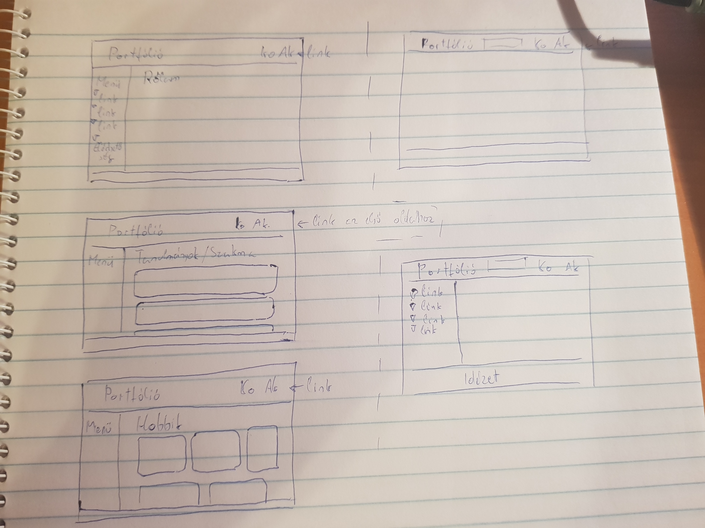

Menü
Főoldal
Elérhetőségek
Telefonszám: 062675753
E-mail: sajtoskenyér@gmail.com
Budapest 1111,
XI. Kerület
Irinyi József u 1-17.
Kármán Tódor Kollégium 559
E-mail: sajtoskenyér@gmail.com
Budapest 1111,
XI. Kerület
Irinyi József u 1-17.
Kármán Tódor Kollégium 559
Grafikai tervezet
Grafikai tervezet
Az eredeti elgondolásaimat sikerült nagyjából megvalósítani. Kezdetben csak pár egyszerű színt alkalmaztam, és úgy terveztem majd kijavítom, de összeségében nem változtattam rajta sokat mert tetszett a letisztult megjelnése.
Bizonyos elrendezésekkel bajlódtam sokat, és többször vissza kellett néznem a videókat, de végül megoldottam a problémákat. Erről a weboldalról használtam fel az egyik betűtípus kódját:
https://fonts.googleapis.com/css2?family=Roboto:wght@300;400;700&display=swap_
Valamint ezt a weboldalt tanácsolták az oktató videókban árnyékolás effektekhez https://html-css-js.com/css/generator/text-shadow/
https://www.w3schools.com/css/default.asp De utóbbi weboldal segítségét is sokszor igénybevettem.
